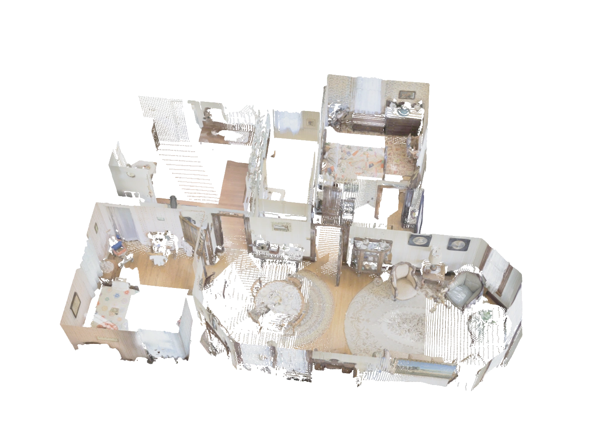

AnchorComplete
Recovering Complete Scene Meshes from Partial Point Clouds
1Technical University of Munich2Munich Center for Machine Learning
3Nanyang Technological University4University of Oxford
BibTeX
@misc{chen2026anchorcomplete,
title = {Recovering Complete Scene Meshes from Partial Point Clouds},
author = {Chen, Weirong and El-Yamany, Ismail and Zhang, Ganlin and
Zheng, Chuanxia and Vedaldi, Andrea and Cremers, Daniel},
year = {2026},
archivePrefix = {arXiv},
primaryClass = {cs.CV},
eprint = {2611.03228},
url = {https://arxiv.org/abs/2611.03228}
}Replica · 7.8 × 4.7 m
Drag either view to explore · scroll or pinch to zoom · both cameras stay in sync.
TL;DR AnchorComplete turns partial point clouds into complete scene meshes, preserves observed geometry, and scales from individual rooms to large multi-room scenes through metric-scale coarse-to-fine generation.
AbstractRead abstract
Most image-based 3D reconstructors prioritize reconstructing visible surfaces, producing partial point clouds with large holes and missing areas due to limited field of view and occlusions. To address this gap, we introduce AnchorComplete, a framework that recovers complete scene meshes from partial point reconstructions. Our design addresses two key challenges: anchoring generation to the observed geometry and scaling completion to scenes of any extent. We introduce a partial-point conditioning module that guides both sparse-structure and sparse-latent generation using the input point cloud, together with metric-scale coarse-to-fine generation: an octree of fixed-size metric windows, each refining the layout of its coarser parent, keeps every mesh cell at 0.78 cm regardless of scene extent and recovers thin structures that a single normalized cube cannot resolve. We instantiate these designs on top of the sparse latent representation of TRELLIS. The resulting model produces complete scene meshes that remain faithful to the observed geometry, providing a more complete digital representation of the physical environment. Experiments on Replica and SCRREAM show that AnchorComplete consistently outperforms strong baselines in complete scene reconstruction, particularly under sparse-view settings.
Video
From partial point clouds to voxel structure and complete meshes.
27 seconds · Six real RGB input views, overlapping Stage 1 cube denoising, and the completed Stage 2 mesh.
Overview
Partial reconstructions leave occluded and unobserved surfaces missing. We combine a generative 3D prior with geometric conditioning to recover complete scene meshes, and scale generation through a coarse-to-fine metric octree.

Input point cloud
Same apartment as the pipeline. The input view includes mild spatial noise. Drag to rotate · scroll or pinch to zoom · slide to explore the generation stages.
Pipeline
Generation is anchored by the input points and refined from a global layout to local geometry.

Partial-point conditioning
Global anchor tokens guide both generation stages through cross-attention. Local spatial injection supplies observed geometry and visibility information directly to the generator.
Coarse-to-fine generation
Each finer window refines its parent's layout, conditioned on the observed points. The final shape latents are decoded, merged on a shared metric lattice, and meshed once.
Compare reconstruction methods
Explore five ScanNet++ scenes reconstructed from eight views. Select a method on either side; both views share the same input and move together.
ScanNet++ · Scene 1 · 8-view GT-depth input · Seen2Scene / Ours
The viewpoint stays fixed when you change methods. Drag either side to inspect geometry together.
Complete-scene reconstruction
Four-view results for image-based generation and scene-completion methods on Replica and SCRREAM.
Higher is better · F-score over the complete scene
Bar lengths share a zero-based scale across Replica and SCRREAM within each metric; exact scores are shown at right. Scene-level finetuning is aligned to the input cloud.
BibTeX
@misc{chen2026anchorcomplete,
title = {Recovering Complete Scene Meshes from Partial Point Clouds},
author = {Chen, Weirong and El-Yamany, Ismail and Zhang, Ganlin and
Zheng, Chuanxia and Vedaldi, Andrea and Cremers, Daniel},
year = {2026},
archivePrefix = {arXiv},
primaryClass = {cs.CV},
eprint = {2611.03228},
url = {https://arxiv.org/abs/2611.03228}
}